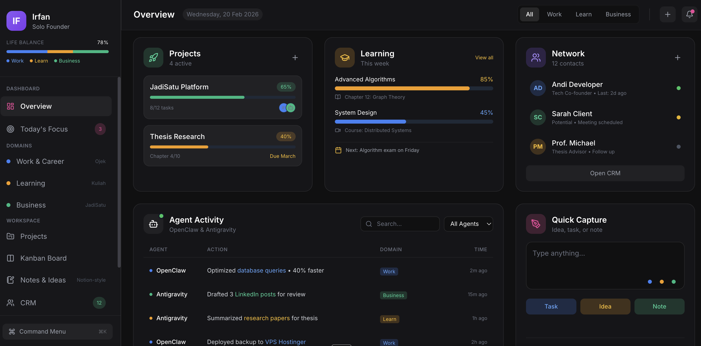

Sistem yang mikir bareng kamu.
Simpel. Fokus. Tanpa keputusan kecil yang menguras.
Mencatat ide seringkali butuh terlalu banyak keputusan:

Tumpahkan semuanya lewat chat, dan biarkan sistem merapikannya saat kamu siap mengeksekusi.
Aplikasi produktivitas tradisional memaksamu menjadi manajer administratif dari datamu sendiri. Jadisatu membalik logika itu.
Delegasikan ide mentah dan tugas ke Juru (Asisten WhatsApp kami), dan sistem di dasbor akan menyusunnya menjadi rencana kerja.
Dari chaos ke clarity dalam tiga langkah
Campaign Q3 presentation
Sistem yang udah nungguin kamu buat kerja, bukan sebaliknya.
Mulai Jadisatu Sekarang →Gratis selamanya untuk personal use